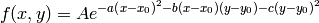
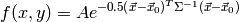
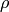

Gaussian2D¶
- class astropy.modeling.functional_models.Gaussian2D(amplitude, x_mean, y_mean, x_stddev=None, y_stddev=None, theta=0.0, cov_matrix=None, **kwargs)[source] [edit on github]¶
Bases: astropy.modeling.Fittable2DModel
Two dimensional Gaussian model.
Parameters: amplitude : float
Amplitude of the Gaussian.
x_mean : float
Mean of the Gaussian in x.
y_mean : float
Mean of the Gaussian in y.
x_stddev : float
Standard deviation of the Gaussian in x. x_stddev and y_stddev must be specified unless a covariance matrix (cov_matrix) is input.
y_stddev : float
Standard deviation of the Gaussian in y. x_stddev and y_stddev must be specified unless a covariance matrix (cov_matrix) is input.
theta : float, optional
Rotation angle in radians. The rotation angle increases counterclockwise.
cov_matrix : ndarray, optional
A 2x2 covariance matrix. If specified, overrides the x_stddev, y_stddev, and theta specification.
Other Parameters: fixed : a dict
A dictionary {parameter_name: boolean} of parameters to not be varied during fitting. True means the parameter is held fixed. Alternatively the fixed property of a parameter may be used.
tied : dict
A dictionary {parameter_name: callable} of parameters which are linked to some other parameter. The dictionary values are callables providing the linking relationship. Alternatively the tied property of a parameter may be used.
bounds : dict
eqcons : list
A list of functions of length n such that eqcons[j](x0,*args) == 0.0 in a successfully optimized problem.
ineqcons : list
A list of functions of length n such that ieqcons[j](x0,*args) >= 0.0 is a successfully optimized problem.
See also
Notes
Model formula:

Using the following definitions:

- If using a cov_matrix, the model is of the form:

where
![\vec{x} = [x, y]](../_images/math/d47841f95f78da996bb3d8aadec193b3d0457d77.png) ,
, ![\vec{x}_{0} = [x_{0}, y_{0}]](../_images/math/c2b42e5f1b80cba837d6f5beec676b3742753e70.png) ,
and
,
and  is the covariance matrix:
is the covariance matrix:
 is the correlation between x and y, which should be between -1 and +1. Positive correlation corresponds to a theta in the range 0 to 90 degrees. Negative correlation corresponds to a theta in the range of 0 to -90 degrees.
See [R6] for more details about the 2D Gaussian function.
References
[R6] (1, 2) http://en.wikipedia.org/wiki/Gaussian_function Attributes Summary
amplitude input_names list() -> new empty list param_names list() -> new empty list theta x_mean x_stddev y_mean y_stddev Methods Summary
evaluate(x, y, amplitude, x_mean, y_mean, ...) Two dimensional Gaussian function fit_deriv(x, y, amplitude, x_mean, y_mean, ...) Two dimensional Gaussian function derivative with respect to parameters Attributes Documentation
- amplitude¶
- input_names = ['x', 'y']¶
- param_names = ['amplitude', 'x_mean', 'y_mean', 'x_stddev', 'y_stddev', 'theta']¶
- theta¶
- x_mean¶
- x_stddev¶
- y_mean¶
- y_stddev¶
Methods Documentation
- static evaluate(x, y, amplitude, x_mean, y_mean, x_stddev, y_stddev, theta)[source] [edit on github]¶
Two dimensional Gaussian function
- static fit_deriv(x, y, amplitude, x_mean, y_mean, x_stddev, y_stddev, theta)[source] [edit on github]¶
Two dimensional Gaussian function derivative with respect to parameters